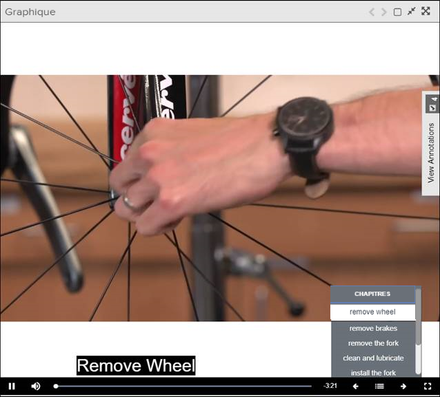

Pinpoint prend en charge le format vidéo MP4. Les vidéos MP4 peuvent contenir des
chapitres.
Lors de la
sélection d'un MP4 avec ce type de structure, une icône Remarque : Les chapitres peuvent être ajoutés via des points chauds
graphiques. Aucun fichier VTT n'est ajouté à la vidéo.
La barre d'outils située sous l'affichage
vidéo vous permet de naviguer dans la vidéo:
Ce tableau fournit les composants disponibles dans la barre d’outils.
| Component | Description |
|---|---|
| Jouer | Sélectionnez cette option pour lire la vidéo. |
| Pause | Sélectionnez cette option pour lire la vidéo. |
| Rejouer | Sélectionnez cette option pour lire la vidéo. |
| Muet / Non Muet | Sélectionnez cette option pour basculer entre muet / non muet. |
| La barre de progression indique la progression de la vidéo. Le temps affiche le temps restant sur l’affichage vidéo. | |
| Sélectionnez cette option pour revenir au sujet précédent. | |
| Survolez cette icône pour afficher les chapitres / sous-chapitres disponibles dans la vidéo. | |
| Suivant | Sélectionnez cette option pour passer au sujet suivant. |
| Plein écran/Non Plein écran | Sélectionnez cette option pour basculer entre les affichages plein écran et non plein écran. |
Ces étapes décrivent comment ouvrir, afficher et naviguer dans une vidéo MP4:
-
Survolez l'icône
 pour afficher les chapitres.
pour afficher les chapitres.

Remarque : Le lecteur vidéo reste statique et n'est pas masqué. -
Sélectionnez
 les boutons Précédent
et Suivant pour vous déplacer entre les sujets de la
vidéo.
les boutons Précédent
et Suivant pour vous déplacer entre les sujets de la
vidéo.